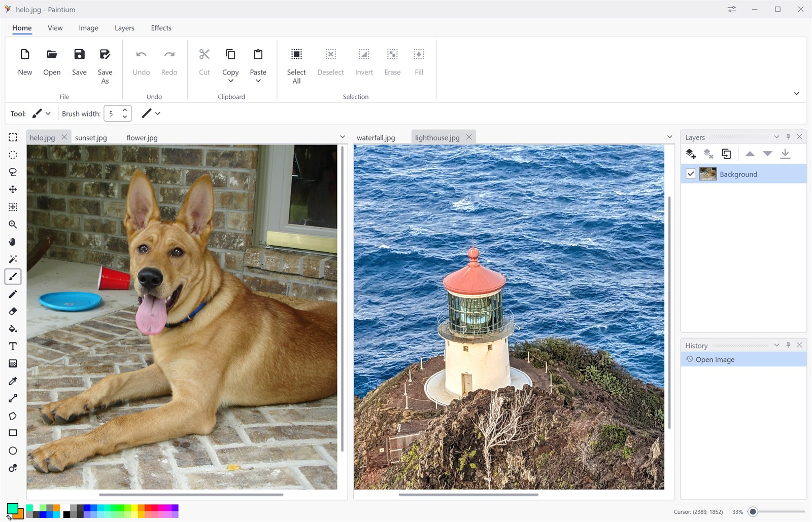
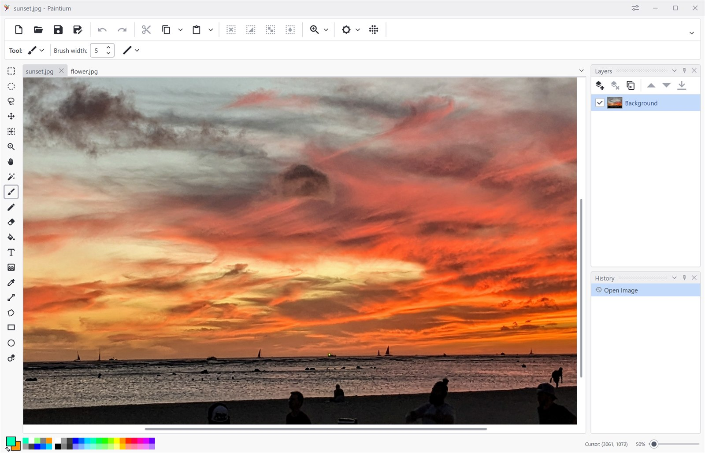
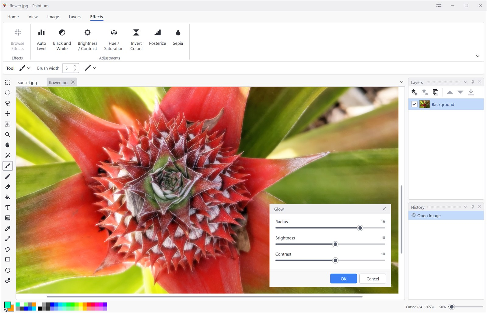
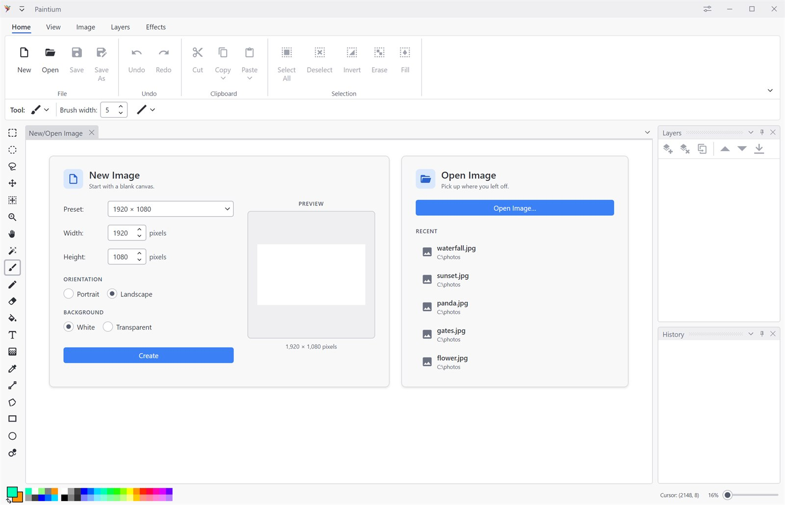
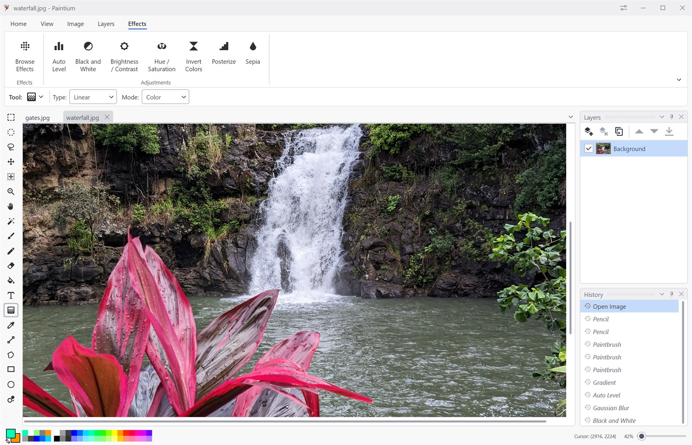
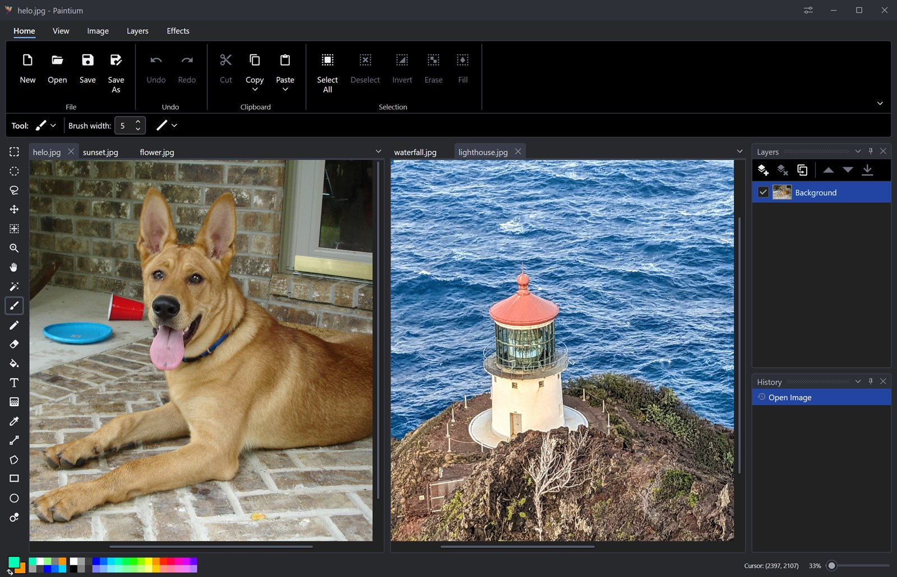

An interface that adapts
Pick a classic ribbon or a compact toolbar. Dock the layers and history panes where you want them, work across tabbed documents, and switch between light and dark themes.
Paintium is a free, easy, modern, lightweight paint and image editor that starts instantly and gets out of your way. Advanced features like layers and blend modes, over 40 effects and adjustments, and an undo history that never forgets sit behind a simple interface, so power and simplicity work together instead of against each other.

Features
Paintium sits in the gap between a bare-bones paint program and a professional suite, making powerful tools simple to use.
Pick a classic ribbon or a compact toolbar. Dock the layers and history panes where you want them, work across tabbed documents, and switch between light and dark themes.
Pencil, paintbrush, eraser, paint bucket, gradients, recolor, color picker, rectangles, ellipses, freeform shapes, editable text, and lines.
Blurs, distortions, artistic filters, photo fixes, procedural renders and fractals: each with a live preview on the canvas, so you dial in settings against the real image instead of guessing.
Stack as many layers as you like, then control each one independently: opacity, visibility, 16 blend modes, flip, rotate & zoom, duplicate, merge down, or flatten the whole stack.
Every action lands in a dockable history pane. Scrub back to any earlier state, then forward again, the whole session stays reversible, not just the last few strokes.
Open and save PNG, JPEG, WebP and BMP, or use OpenRaster (.ora) to keep your full layer stack intact.
Screenshots
Click any shot to view it full size.




